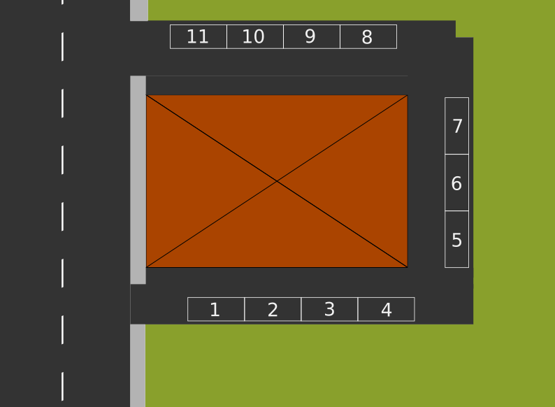
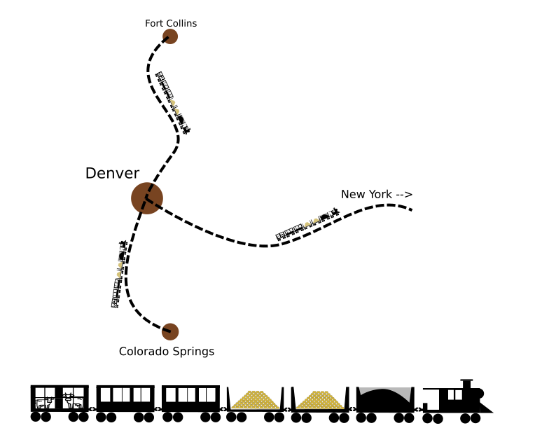
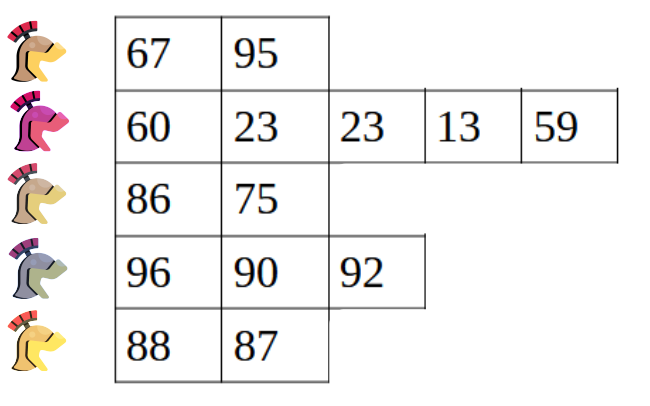

Liste 2 - operatori
Scarica zip esercizi
Per manipolare le liste vi sono diversi operatori. I seguenti si comportano come quelli visti per le stringhe.
Operatore |
Risultato |
Significato |
|---|---|---|
|
|
Ritorna la lunghezza di una lista |
list |
obj |
Legge/scrive un elemento all’indice specificato |
list |
|
Estrae una sotto-lista - ritorna una NUOVA lista |
obj |
|
Controlla se un elemento è presente in una lista |
list |
|
Concatena due liste - ritorna una NUOVA lista |
|
|
Data una lista di numeri, ritorna il massimo |
|
|
Data una lista di numeri, ritorna il minimo |
|
|
Data una lista di numeri, li somma tutti |
list |
|
Replica la lista - ritorna una NUOVA lista |
|
|
Controlla se due liste sono uguali o differenti |
Che fare
scompatta lo zip in una cartella, dovresti ottenere qualcosa del genere:
lists
lists1.ipynb
lists1-sol.ipynb
lists2.ipynb
lists2-sol.ipynb
lists3.ipynb
lists3-sol.ipynb
lists4.ipynb
lists4-sol.ipynb
lists5-chal.ipynb
jupman.py
ATTENZIONE: Per essere visualizzato correttamente, il file del notebook DEVE essere nella cartella szippata.
apri il Jupyter Notebook da quella cartella. Due cose dovrebbero aprirsi, prima una console e poi un browser. Il browser dovrebbe mostrare una lista di file: naviga la lista e apri il notebook
lists2.ipynbProsegui leggendo il file degli esercizi, ogni tanto al suo interno troverai delle scritte ESERCIZIO, che ti chiederanno di scrivere dei comandi Python nelle celle successive.
Scorciatoie da tastiera:
Per eseguire il codice Python dentro una cella di Jupyter, premi
Control+InvioPer eseguire il codice Python dentro una cella di Jupyter E selezionare la cella seguente, premi
Shift+InvioPer eseguire il codice Python dentro una cella di Jupyter E creare una nuova cella subito dopo, premi
Alt+InvioSe per caso il Notebook sembra inchiodato, prova a selezionare
Kernel -> Restart
Lunghezza di una lista
Una lista è una sequenza, e come per tutte le sequenze per ottenere la lunghezza si può usare la funzione len:
[2]:
a = [7,5,8]
[3]:
len(a)
[3]:
3
[4]:
b = [8,3,6,4,7]
[5]:
len(b)
[5]:
5
Se una lista contiene altre liste, contano come singoli elementi:
[6]:
mista = [
[4,5,1],
[8,6],
[7,6,0,8],
]
[7]:
len(mista)
[7]:
3
ATTENZIONE: NON puoi usare ``len`` come se fosse un metodo
[3,4,2].len() #SBAGLIATO
ESERCIZIO: Prova a scrivere [3,4,2].len() qua sotto, che errore appare?
[8]:
# scrivi qui
ESERCIZIO: Prova a scrivere [3,4,2].len SENZA le doppie tonde alla fine, che errore appare?
[9]:
# scrivi qui
DOMANDA: Se x è una lista qualunque, scrivendo
len(len(x))
cosa otteniamo?
la lunghezza della lista
un errore
qualcos’altro
[10]:
# scrivi il codice qui
DOMANDA: Guarda questa espressione, senza eseguirla. Cosa produce?
[len([]), len([len(['a','b'])])]
un errore (quale?)
un numero (quale?)
una lista (quale?)
Prova a scrivere a mano il risultato, e poi confrontalo con quello ottenuto eseguendo il codice in una cella.
Mostra rispostaDOMANDA: Guarda questa espressione, senza eseguirla. Cosa produce?
len([[[],[]],[],[[[]]],[[],[]]])
un errore (quale?)
un numero (quale?)
una lista (quale?)
DOMANDA: Cosa produce la seguente espressione?
[[((len('ababb')))],len(["argg",('b'),("c")]), len([len("bc")])]
Leggere un elemento
Come per le stringhe, possiamo accedere ad un elemento di una lista mettendo l’indice della posizione a cui vogliamo accedere tra parentesi quadre:
[11]:
# 0 1 2 3
la = [70, 60, 90, 50]
Come per tutte le sequenze, le posizioni iniziano da ``0``:
[12]:
la[0]
[12]:
70
[13]:
la[1]
[13]:
60
[14]:
la[2]
[14]:
90
[15]:
la[3]
[15]:
50
Come per le stringhe, se sforiamo con l’indice otteniamo un errore:
la[4]
---------------------------------------------------------------------------
IndexError Traceback (most recent call last)
<ipython-input-134-09bfed834fa2> in <module>
----> 1 la[4]
IndexError: list index out of range
Di nuovo come per le stringhe possiamo ottenere l’ultimo elemento usando un indice negativo:
[16]:
# 0 1 2 3
la = [70, 60, 90, 50]
[17]:
la[-1]
[17]:
50
[18]:
la[-2]
[18]:
90
[19]:
la[-3]
[19]:
60
[20]:
la[-4]
[20]:
70
Se esageriamo ed andiamo oltre la lunghezza della lista, otteniamo un errore:
la[-5]
---------------------------------------------------------------------------
IndexError Traceback (most recent call last)
<ipython-input-169-f77280923dce> in <module>
----> 1 la[-5]
IndexError: list index out of range
DOMANDA: se x è una lista qualunque, scrivendo
x[0]
cosa otteniamo?
il primo elemento della lista
sempre un errore
a volte un elemento a volte un errore a seconda della lista
[21]:
# scrivi il codice qui
DOMANDA: se x è una lista qualunque, scrivendo
x[len(x)]
cosa otteniamo?
un elemento della lista
sempre un errore
a volte un elemento a volte un errore a seconda della lista
Esercizio - L’apprendista di Gutenberg
Quale onore! Alla tua età assunta come apprendista del maestro Gutenberg! La tua mansione è quella di comporre le pagine con i blocchetti di caratteri in ferro in modo che gli altri collaboratori poi mandino il tutto alla pressa da stampa.
Hai a disposizione una lista in cui sono salvati i blocchetti originali. Riesci a stampare la scritta Gutenberg ?
NON scrivere caratteri o stringhe aggiuntive (es: niente
'g'o'G'!)ogni lettera PUO’ essere riutilizzata
[22]:
lettere = ['b', 'e', 'g', 'n', 'r', 't', 'u'] # Gutenberg
#lettere = ['a', 'm', 's', 'p', 'o', 'a', 't'] # Stampamos
l = lettere # Creiamo una nuova variabile più corta per comodità
# scrivi qui
Scrivere un elemento
Visto che le liste sono MUTABILI, dato un oggetto lista possiamo cambiare il contenuto di una qualunque cella al suo interno.
Supponiamo per esempio di voler cambiare la cella all’indice 2 della lista la, cambiandolo da 6 a 5:
[23]:
#0 1 2 3
la = [7, 9, 6, 8]
Possiamo scrivere così:
[24]:
la[2] = 5
[25]:
la
[25]:
[7, 9, 5, 8]
Guardiamo meglio che succede in Python Tutor:
[26]:
# AFFINCHE' PYTHON TUTOR FUNZIONI, RICORDATI DI ESEGUIRE QUESTA CELLA con Shift+Invio
# (basta eseguirla una volta sola, la trovi anche all'inizio di ogni foglio)
import jupman
[27]:
# 0 1 2 3
la = [7, 9, 6, 8]
la[2] = 5
jupman.pytut()
[27]:
Come vedi, in questo non vengono create regioni di memoria nuove, semplicemente si va a sovrascrivere una cella esistente.
Esercizio - Un parcheggio intasato
Sei l’amministratore del condominio “La Gioia Pitonica”. Ogni appartamento ha uno o due posti auto assegnati e ciascuno è numerato da 1 a 11.
La seguente è il parcheggio attuale, e come si può vedere ci sono tre buchi non assegnati, perchè gli appartamenti 3, 4 e 7 non hanno più un affittuario.
[28]:
parcheggi = ["Carlo", "App.3", "Ernesto", "App.4", "App.7", "Pam", "Giovanna", "Camilla", "Giorgia", "Jessica", "Jim"]
Per mantenere l’ordine decidi che è il caso di compattare le assegnazioni e di lasciare i posti vuoti tutti in fondo (può essere comodo per far parcheggiare i traslocatori!)
Scrivi del codice per MODIFICARE parcheggi in modo che risulti:
>>> print(parcheggi)
['Carlo', 'Jessica', 'Ernesto', 'Jim', 'Giorgia', 'Pam', 'Giovanna', 'Camilla', 'App.7', 'App.3', 'App.4']
NON creare nuove liste (niente
[a,b, ...]nèlist(a,b,...))NON scrivere nomi dei proprietari nè degli appartamenti (niente
'Pam'o'Apt.3')il parcheggio può avere lunghezza variabile
i posti non assegnati sono sempre 3 e in posizione fissa

Mostra soluzione[29]:
parcheggi = ["Carlo", "App.3", "Ernesto", "App.4", "App.7", "Pam", "Giovanna", "Camilla", "Giorgia", "Jessica", "Jim"]
#risultato: ['Carlo', 'Jessica', 'Ernesto', 'Jim', 'Giorgia', 'Pam', 'Giovanna', 'Camilla', 'App.7', 'App.3', 'App.4']
#parcheggi= ["Cristian", "App.3", "Edgar", "App.4", "App.7", "Pamela", "Giusy", "Cristina", "John"]
#risultato: ['Cristian', 'Cristina', 'Edgar', 'John', 'Giusy', 'Pamela', 'App.7', 'App.3', 'App.4']
# scrivi qui
Mutare liste condivise
ATTENZIONE: L’ARGOMENTO CHE SEGUE E’ CAUSA DEL 90% DEGLI ERRORI DI PROGRAMMAZIONE !!!
LEGGI BENE !!!
Cosa succede quando associamo a due variabili lo stesso identico oggetto mutabile, come per esempio una lista, e poi usando una delle due variabili mutiamo l’oggetto?
Guardiamo un esempio - per prima cosa, alla variabile la associamo la lista [7,9,6]:
[30]:
la = [7,9,6]
Adesso definiamo una nuova variabile lb, e associamogli come valore lo stesso valore già associato alla variabile la. Nota bene: qua NON stiamo creando nuove liste !
[31]:
lb = la
[32]:
print(la) # la è sempre lo stesso
[7, 9, 6]
[33]:
print(lb) # lb è la stessa lista associata a la
[7, 9, 6]
Proviamo a modificare una cella di lb, mettendo 5 nella cella all’indice 0:
[34]:
lb[0] = 5
Se proviamo a stampare le variabili la ed lb, Python andrà a guardare i valori associati a ciascuna variabile. Dato che il valore è la stessa identica lista (che risiede nella stessa identica regione di memoria ), in entrambi i casi vedrai la modifica appena fatta !
[35]:
print(la)
[5, 9, 6]
[36]:
print(lb)
[5, 9, 6]
Guardiamo meglio che succede in Python Tutor:
[37]:
la = [7,9,6]
lb = la
lb[0] = 5
print('la è', la)
print('lb è', lb)
jupman.pytut()
la è [5, 9, 6]
lb è [5, 9, 6]
[37]:
Guardiamo la differenza se invece creiamo esplicitamente una lista uguale a la.
In questo caso avremo due regioni di memoria distinte e la NON sarà modificato:
[38]:
la = [7,9,6]
lb = [7,9,6]
lb[0] = 5
print('la è', la)
print('lb è', lb)
jupman.pytut()
la è [7, 9, 6]
lb è [5, 9, 6]
[38]:
DOMANDA: Dopo l’esecuzione di questo codice, cosa verrà stampato? Quante liste ci saranno effettivamente in memoria?
Prova a disegnare SU CARTA quello che succede in memoria, e poi confronta con il risultato in Python Tutor!
la = [8,7,7]
lb = [9,6,7,5]
lc = lb
la = lb
print('la è', la)
print('lb è', lb)
print('lc è', lc)
[39]:
la = [8,7,7]
lb = [9,6,7,5]
lc = lb
la = lb
#print('la è', la)
#print('lb è', lb)
#print('lc è', lc)
jupman.pytut()
[39]:
DOMANDA: Guarda il codice seguente. Dopo la sua esecuzione, cosa produrrà la stampa di la, lb ed lc ?
Prova a disegnare SU CARTA quello che succede in memoria, e poi confronta con il risultato in Python Tutor!
la = [7,8,5]
lb = [6,7]
lc = lb
lb = la
lc[0] = 9
print('la è', la)
print('lb è', lb)
print('lc è', lc)
[40]:
la = [7,8,5]
lb = [6,7]
lc = lb
lb = la
lc[0] = 9
#print('la è', la)
#print('lb è', lb)
#print('lc è', lc)
jupman.pytut()
[40]:
Liste di stringhe
Abbiamo detto che in una lista possiamo mettere qualunque oggetto, per esempio delle stringhe:
[41]:
verdure = ['pomodori', 'verze', 'carote', 'cavoli']
Proviamo ad estrarre una verdura scrivendo questa espressione:
[42]:
verdure[2]
[42]:
'carote'
Ora, l’espressione precedente ci ha prodotto il risultato 'carote', che sappiamo essere una stringa. Questo ci suggerisce che possiamo usare l’espressione esattamente come se fosse una stringa.
Supponiamo che vogliamo ottenere il primo carattere della stringa 'carote', avendo direttamente la stringa scriveremmo così:
[43]:
'carote'[0]
[43]:
'c'
Ma se la stringa è racchiusa nella lista di prima, potremmo fare direttamente così:
[44]:
verdure[2][0]
[44]:
'c'
Visto che l’espressione verdure[2] produce a tutti gli effetti una stringa, possiamo chiamare i metodi delle stringhe che vogliamo:
[45]:
verdure[2].capitalize()
[45]:
'Carote'
Esercizio - sigle
Data una lista con sigle di esattamente 4 capoluoghi in minuscolo, scrivere del codice che crea una NUOVA lista contente le stesse sigle in caratteri tutti maiuscoli.
il tuo codice deve funzionare con qualunque lista di 4 capoluoghi
suggerimento: se non ti ricordi il metodo giusto, guarda qua
Esempio 1 - dato:
sigle = ['tn','mi','to','ro']
il tuo codice deve stampare
['TN', 'MI', 'TO', 'RO']
Esempio 2 - dato:
sigle = ['pa','ge','ve', 'aq']
il tuo codice deve stampare:
['PA', 'GE', 'VE', 'AQ']

[46]:
sigle = ['tn','mi','to','ro']
# scrivi qui
Esercizio - giochi
Data una lista giochi di esattamente 3 stringhe, scrivi del codice che MODIFICA la lista in modo che contenga solo i primi caratteri di ciascuna stringa
Il tuo codice deve funzionare con qualunque lista di esattamente 3 stringhe
Esempio - data:
giochi = ["Monopoli", "RISIKO", "Tombola"]
Dopo l’esecuzione del tuo codice, deve risultare:
>>> print(giochi)
["M","R","T"]
NON creare liste nuove (quindi niente assegnazioni come
giochi =…)
[47]:
giochi = ["Monopoli", "RISIKO", "Tombola"] # ['M','R','T']
#giochi = ["Non t'arrabbiare", "Gioco dell'oca", "Scarabeo"] # ['N','G','S']
# scrivi qui
Slice
Possiamo estrarre delle sequenze dalle liste usando le slice. Una slice si produce aggiungendo delle parentesi quadre alla destra della lista e mettendo nelle quadre l’indice di partenza (INCLUSO), seguito da due punti :, seguito dall’indice di fine (ESCLUSO). Funziona esattamente come per le stringhe: in quel caso la quadra produceva una nuova stringa, in questo si produce una NUOVA lista. Vediamo un esempio:
[48]:
#0 1 2 3 4 5 6 7 8 9
la = [40,30,90,80,60,10,40,20,50,60]
[49]:
la[3:7]
[49]:
[80, 60, 10, 40]
Abbiamo estratto una NUOVA lista [80, 60, 10, 40] a partire della lista la partendo dall’indice 3 INCLUSO fino all’indice 7 ESCLUSO. Possiamo vedere che la lista originale si è preservata:
[50]:
la
[50]:
[40, 30, 90, 80, 60, 10, 40, 20, 50, 60]
Verifichiamo cosa succede con Python Tutor, assegnando la nuova lista ad una variabile lb:
[51]:
# 0 1 2 3 4 5 6 7 8 9
la = [40,30,90,80,60,10,40,20,50,60]
lb = la[3:7]
jupman.pytut()
[51]:
Noterai che compare una NUOVA regione di memoria, associata alla variabile lb.
Slice - limiti
Quando operiamo con le slice dobbiamo stare attenti ai limiti degli indici. Vediamo come si comportano:
[52]:
#0 1 2 3 4
[50,90,70,80,60][0:3] # da indice 0 *incluso* a 3 *escluso*
[52]:
[50, 90, 70]
[53]:
#0 1 2 3 4
[50,90,70,80,60][0:4] # da indice 0 *incluso* a 4 *escluso*
[53]:
[50, 90, 70, 80]
[54]:
#0 1 2 3 4
[50,90,70,80,60][0:5] # da indice 0 *incluso* a 5 *escluso*
[54]:
[50, 90, 70, 80, 60]
[55]:
#0 1 2 3 4
[50,90,70,80,60][0:6] # se andiamo oltre la lunghezza della lista Python non si arrabbia
[55]:
[50, 90, 70, 80, 60]
[56]:
#0 1 2 3 4
[50,90,70,80,60][8:12] # anche se partiamo da indici inesistenti Python non si arrabbia
[56]:
[]
DOMANDA: Questa espressione
[][0:8]
produce un risultato (quale?)
produce un errore (quale?)
DOMANDA: Questa espressione
[][3:8]
produce un risultato (quale?)
produce un errore (quale?)
DOMANDA: se x è una lista qualsiasi (anche vuota), questa espressione cosa fa? Può dare errore? o ritorna qualcosa di utile?
x[0:len(x)]
Esercizio - La treccia mochena
Come ben sai nella valle dei Mocheni vi è una meravigliosa specialità di cucina pasticciera: si tratta della famosa treccia Mochena.
Ad un’occhiata frettolosa la treccia mochena potrebbe apparire come uno sfilatino, lungo tra i 30 e 60 cm al cui interno vengono messi un mix di ingredienti insieme alla mirabolante e segretissima crema.
Insieme ai tuoi amici Camilla e Giorgio hai acquistato una treccia farcita divisa in un certo numero di porzioni di granella di noci, mirtilli e ribes rossi:
treccia = ['n', 'n', 'n', 'n', 'n', 'm', 'm', 'm', 'm', 'm', 'm', 'r', 'r', 'r', 'r']
noci,mirtilli,ribes = 5,6,4
A te piacciono i mirtilli, a Giorgio le noci e a Camilla il ribes.
Scrivi del codice per mettere nelle variabili mio, giorgio e camilla delle liste ottenute da treccia, e STAMPA il risultato:
Mio: ['m', 'm', 'm', 'm', 'm', 'm']
Giorgio: ['n', 'n', 'n', 'n', 'n']
Camilla: ['r', 'r', 'r', 'r']
supponi la
trecciaabbia sempre solo 3 ingredientiNON scrivere numeri costanti nel codice (a parte
0)
[57]:
# Noci Mirtilli Ribes
noci,mirtilli,ribes,treccia = 5,6,4,['n', 'n', 'n', 'n', 'n', 'm', 'm', 'm', 'm', 'm', 'm', 'r', 'r', 'r', 'r']
#noci,mirtilli,ribes,treccia = 2,4,3,['N', 'N', 'M', 'M', 'M', 'M', 'R', 'R', 'R']
# scrivi qui
Slice - omissione limiti
Volendo, è possibile omettere l’indice di partenza, in tal caso Python supporrà sia 0:
[58]:
#0 1 2 3 4 5 6 7 8 9
[90,60,80,70,60,90,60,50,70][:3]
[58]:
[90, 60, 80]
E’ anche possibile omettere l’indice di fine, in tal caso Python estrarrà fino alla fine della lista:
[59]:
#0 1 2 3 4 5 6 7 8 9
[90,60,80,70,60,90,60,50,70][3:]
[59]:
[70, 60, 90, 60, 50, 70]
Omettendo entrambi gli indici si ottiene l’intera lista:
[60]:
#0 1 2 3 4 5 6 7 8 9
[90,60,80,70,60,90,60,50,70][:]
[60]:
[90, 60, 80, 70, 60, 90, 60, 50, 70]
DOMANDA: Cosa stamperà questo codice ? la sarà modificato oppure no?
la = [7,8,9]
lb = la[:]
lb[0] = 6
print('la =',la)
print('lb =',lb)
[61]:
la = [7,8,9]
lb = la[:]
lb[0] = 6
#print('la =',la)
#print('lb =',lb)
jupman.pytut()
[61]:
DOMANDA: Per ciascuna delle espressioni seguenti, prova a indovinare quale valore produce, o se da errore.
[9,7,8,6][1:1]
[9,7,8,6][1:2]
[9,7,8,6][2:3][0]
[][][][:][3][:]
[:][]
Esercizio - La chitarra scordata
In soffitta hai trovato una vecchia chitarra che girava per casa quando eri una bambina. Adesso che ti sei laureata in ingegneria della gestione del suono provi a strimpellarla mentre un sensore misura la nota prodotta.
Il sensore è un microfono e ogni decimo di secondo registra la nota principale che ha rilevato.
Con questo test ti accorgi di questo fenomeno: alcune delle corde della chitarra appena vengono suonate hanno un comportamento altalenante ma poi si sintonizzano su una nota precisa fino alla fine:
're', 'la', 'fa', 'mi', 'si', 'sol', 'si', 'fa', 'fa', 'fa', 'fa', 'fa', 'fa', 'fa', '...'
Altre corde invece fanno l’opposto:
'do', 'do', 'do', 'do', 'do', 're', 'sol', 'fa', 'si', 'si', 'do', 'si', '...'
In una lista tempi sono registrati per ciascuna corda gli istanti in cui ciascuna corda inizia o finisce il comportamento anomalo. Gli istanti sono rappresentati come una sequenza di battiti '*', per es la prima corda ha un comportamento anomalo dopo 5 battiti: '*****', mentre la seconda finisce il comportamento anomalo dopo 7 battiti: '*******'
Scrivi del codice per tagliare l’output del sensore e ottenere così solo le sequenze di note continue e corrette. Alla fine deve STAMPARE:
['do', 'do', 'do', 'do', 'do']
['fa', 'fa', 'fa', 'fa', 'fa', 'fa', 'fa', '...']
['re', 're', 're', 're', 're', 're', '...']
['sol', 'sol', 'sol', 'sol']
NON scrivere numeri di istanti costanti nel codice, usa invece la variabile
tempi
[62]:
tempi = ['*****',
'*******',
'***',
'****',]
corda1 = ['do', 'do', 'do', 'do', 'do', 're', 'sol', 'fa', 'si', 'si', 'do', 'si', '...']
corda2 = ['re', 'la', 'fa', 'mi', 'si', 'sol', 'si', 'fa', 'fa', 'fa', 'fa', 'fa', 'fa', 'fa', '...']
corda3 = ['si', 'mi', 'sol', 're', 're', 're', 're', 're', 're', '...']
corda4 = ['sol', 'sol', 'sol', 'sol', 're', 're', 'la', 'la', 'si', 'fa', 'si', '...']
# scrivi qui
Slice - limiti negativi
Volendo è anche possibile impostare limiti negativi, per quanto non sia sempre molto intuitivo.
[63]:
#0 1 2 3 4 5 6
[70,40,10,50,60,10,90][3:0] # da indice 3 a indici positivi <= 3 non produce nulla
[63]:
[]
[64]:
#0 1 2 3 4 5 6
[70,40,10,50,60,10,90][3:1] # da indice 3 a indici positivi <= 3 non produce nulla
[64]:
[]
[65]:
#0 1 2 3 4 5 6
[70,40,10,50,60,10,90][3:2] # da indice 3 a indici positivi <= 3 non produce nulla
[65]:
[]
[66]:
#0 1 2 3 4 5 6
[70,40,10,50,60,10,90][3:3] # da indice 3 a indici positivi <= 3 non produce nulla
[66]:
[]
Vediamo cosa succede con indici negativi:
[67]:
# 0 1 2 3 4 5 6
#-7 -6 -5 -4 -3 -2 -1
[70,40,10,50,60,10,90][3:-1]
[67]:
[50, 60, 10]
[68]:
# 0 1 2 3 4 5 6
#-7 -6 -5 -4 -3 -2 -1
[70,40,10,50,60,10,90][3:-2]
[68]:
[50, 60]
[69]:
# 0 1 2 3 4 5 6
#-7 -6 -5 -4 -3 -2 -1
[70,40,10,50,60,10,90][3:-3]
[69]:
[50]
[70]:
# 0 1 2 3 4 5 6
#-7 -6 -5 -4 -3 -2 -1
[70,40,10,50,60,10,90][3:-4]
[70]:
[]
[71]:
# 0 1 2 3 4 5 6
#-7 -6 -5 -4 -3 -2 -1
[70,40,10,50,60,10,90][3:-5]
[71]:
[]
E’ anche possibile partire da un indice negativo e arrivare ad uno positivo: finchè il primo indice marca una posizione antecedente a quella del secondo indice, viene restituito qualcosa:
[72]:
# 0 1 2 3 4 5 6
#-7 -6 -5 -4 -3 -2 -1
[70,40,10,50,60,10,90][-7:3]
[72]:
[70, 40, 10]
[73]:
# 0 1 2 3 4 5 6
#-7 -6 -5 -4 -3 -2 -1
[70,40,10,50,60,10,90][-6:3]
[73]:
[40, 10]
[74]:
# 0 1 2 3 4 5 6
#-7 -6 -5 -4 -3 -2 -1
[70,40,10,50,60,10,90][-5:3]
[74]:
[10]
[75]:
# 0 1 2 3 4 5 6
#-7 -6 -5 -4 -3 -2 -1
[70,40,10,50,60,10,90][-4:3]
[75]:
[]
[76]:
# 0 1 2 3 4 5 6
#-7 -6 -5 -4 -3 -2 -1
[70,40,10,50,60,10,90][-3:3]
[76]:
[]
[77]:
# 0 1 2 3 4 5 6
#-7 -6 -5 -4 -3 -2 -1
[70,40,10,50,60,10,90][-2:3]
[77]:
[]
DOMANDA: Per ciascuna delle espressioni seguenti, prova a indovinare quale valore produce, o se da errore.
[9,7,8,6][0:-2]
[0:-2][9,7,8,6]
[5,7,9][1:-1]
[][-13:-17]
[9,7,8,6][-4:-1]
[9,7,8,6][-5:-1]
[9,7,8,6,10,32][-3:1]
[9,7,8,6,10,32][-3:5]
Esercizio - La bislaccheria
Per controllare le tue spese vuoi scrivere un software che tenga traccia di tutto ciò che compri. E cercare di ridurre le spese inutili.
Ti basterà scattare una foto con lo smartphone allo scontrino e un modulo OCR (Optical Character Recognition) provvederà a leggere il testo in maniera automatica.
tutti gli scontrini seguono lo stesso schema: nome negozio, data, “articoli acquistati”, 1 riga per prodotto, totale, ringraziamenti.
assumi tutti gli scontrini siano sempre ordinati per costo
Scrivi del codice per creare una NUOVA lista con solamente le righe degli articoli, per esempio:
['Vernice verde per insalata 1,12€',
'Coriandoli piombo anti-vento 4,99€',
'Pettine per pitoni 12,00€',
'Accendisigari da immersione 23,00€',
'Scarpe trasparenti da casa 35,56€']
Stampa anche l’articolo più costoso così:
La spesa maggiore è stata: Scarpe trasparenti da casa
costo: 35,56€
Supponi il prezzo non superi mai
10caratteri
[78]:
scontrino = ["Negozio La Bislaccheria",
"21 Luglio 2021 14:54",
"Articoli acquistati",
"Vernice verde per insalata 1,12€",
"Coriandoli piombo anti-vento 4,99€",
"Pettine per pitoni 12,00€",
"Accendisigari da immersione 23,00€",
"Scarpe trasparenti da casa 35,56€",
"Totale 56,66€",
"Grazie per aver acquistato il nostro ciarpame!"
]
#scontrino = ["Eleganz",
# "3 Gennaio 2020 12:53",
# "Articoli acquistati",
# "Zeppe con acquario e pesci 342,00€",
# "Abito Completo 'Elvis' 20.000,00€",
# "Totale 20.000,342€",
# "E ora scatenate l'animale da party che è in voi!"]
# scrivi qui
Slice - passo
E’ anche possibile specificare un terzo parametro detto ‘passo’ per indicare a python di quante celle spostarsi ad ogni lettura. Qui per esempio partiamo dall’indice 3 per arrivare all’indice 9 escluso, saltando di 2:
[79]:
# 0 1 2 3 4 5 6 7 8 9
[ 0,10,20,30,40,50,60,70,80,90][3:9:2]
[79]:
[30, 50, 70]
Tutta la sequenza, saltando di 3:
[80]:
# 0 1 2 3 4 5 6 7 8 9
[ 0,10,20,30,40,50,60,70,80,90][0:10:3]
[80]:
[0, 30, 60, 90]
Possiamo anche omettere i limiti per ottenere l’espressione equivalente:
[81]:
# 0 1 2 3 4 5 6 7 8 9
[ 0,10,20,30,40,50,60,70,80,90][::3]
[81]:
[0, 30, 60, 90]
Slice - modifica
Supponiamo di avere la lista
[82]:
#0 1 2 3 4 5 6 7
la = [30,40,80,10,70,60,40,20]
e di voler cambiare le celle di la dall’indice 3 INCLUSO all’indice 6 ESCLUSO in modo che contengano i numeri presi dalla lista [91,92,93]. Possiamo farlo con questa notazione speciale che ci consente di scrivere una slice alla sinistra dell’operatore =:
[83]:
la[3:6] = [91,92,93]
[84]:
la
[84]:
[30, 40, 80, 91, 92, 93, 40, 20]
In questo esempio leggermente più complesso verifichiamo in Python Tutor che viene effettivamente modificata la regione di memoria originale:
[85]:
# 0 1 2 3 4 5 6 7
la = [30,40,80,10,70,60,40,20]
lb = la
lb[3:6] = [91,92,93]
jupman.pytut()
[85]:
DOMANDA: Guarda il seguente codice - cosa produce?
la = [9,6,5,8,2]
la[1:4] = [4,7,0]
print(la)
modifica
la(come?)un errore (quale?)
DOMANDA: Guarda il seguente codice. Cosa produce?
la = [7,6,8,4,2,4,2,3,1]
i = 3
lb = la[0:i]
la[i:2*i] = lb
print(la)
modifica
la(come?)un errore (quale?)
Esercizio - I banditi della ferrovia

Stati Uniti - 13 Maggio 1857
La colonizzazione dei territori del west è un duro lavoro ma qualcuno deve pur farlo. Le montagne sono zeppe di minerali rari e di animali pulciosi da trasformare in preziose pellicce per le nobildame d’Europa. Ma come sempre, dove ci sono grandi ricchezze, arrivano anche grandi banditi.
Sei il capostazione della stazione di Denver e devi gestire i treni. Ci sono tre direttrici principali, Colorado Springs, Fort Collins e New York:
da Colorado Springs arrivano sempre esattamente 1 vagone di carbone, 3 di minerali e 3 di persone alternati
da Fort Collins arrivano sempre esattamente 2 vagoni di carbone, 2 di persone e 2 di bestiame
Quando i treni arrivano a Denver, il loro contenuto viene trasferito nei vagoni vuoti del treno per New York così:
per impedire il compiersi di furti al treno, tutti i vagoni preziosi vanno posizionati vicino alla locomotiva
il bestiame va sempre messo dietro le persone, perchè per quanto l’igiene nel west sia carente è comunque più facile pretendere che gli umani si lavino piuttosto che il bestiame
Scrivi del codice che MODIFICA la regione di memoria ORIGINALE della lista new_york copiando le stringhe da colorado e fort.
MINIMIZZA il numero di assegnazioni! (la soluzione migliore con solo slice ha solamente tre assegnazioni!)
NON scrivere stringhe costanti nel tuo codice (es niente
"cowbow","oro", …)
Esempio - dati:
[86]:
colorado = ["locomotiva CS","carbone", "cowboy", "oro","minatori", "oro","cowboy","argento"]
fort = ["locomotiva FC","carbone","carbone","signori", "dame","mucche","cavalli"]
new_york = ["locomotiva NY","carbone", "", "", "", "", "", "", "","",""]
dopo il tuo codice deve risultare:
>>> print(new_york)
['locomotiva NY', 'carbone', 'oro', 'oro', 'argento', 'cowboy', 'minatori', 'cowboy', 'signori', 'dame', 'mucche', 'cavalli']
[87]:
# 0 1 2 3 4 5 6 7 8 9 10
colorado = ["locomotiva CS","carbone", "cowboy", "oro","minatori", "oro","cowboy","argento"]
fort = ["locomotiva FC","carbone","carbone","signori", "dame","mucche","cavalli"]
new_york = ["locomotiva NY","carbone", "", "", "", "", "", "", "","",""]
# scrivi qui
Liste di liste
NOTA: Parleremo molto più nel dettaglio delle liste di liste nel tutorial Matrici - liste di liste, questa è solo un’introduzione sommaria.
Le considerazioni viste per le liste di stringhe valgono anche per una lista di liste:
[89]:
coppie = [ # lista esterna
[67,95], # lista interna ad indice 0
[60,59], # lista interna ad indice 1
[86,75], # lista interna ad indice 2
[96,90], # lista interna ad indice 3
[88,87], # lista interna ad indice 4
]
Se vogliamo estrarre il numero 90, dobbiamo prima estrarre la sottolista all’indice 3:
[90]:
coppie[3] # NOTA: il risultato di questa espressione è una lista
[90]:
[96, 90]
e quindi dalla sottolista estratta (che ha solo due elementi) possiamo recuperare il numero all’indice 0:
[91]:
coppie[3][0]
[91]:
96
e all’indice 1:
[92]:
coppie[3][1]
[92]:
90
Esercizio - coppie
Scrivi il codice per recuperare e stampare il numero
86, il67e l’87Date una riga con indice
ie una colonnaj, stampare il numero alla rigaie colonnajmoltiplicato per il numero alla riga successiva e stessa colonna
Dopo il tuo codice, dovresti veder stampato:
punto 1: 86 67 87
punto 2: i = 3 j = 1 risultato = 7830
[93]:
coppie = [ # lista esterna
[67,95], # lista interna ad indice 0
[60,59], # lista interna ad indice 1
[86,75], # lista interna ad indice 2
[96,90], # lista interna ad indice 3
[88,87], # lista interna ad indice 4
]
i = 3
j = 1
# scrivi qui
Esercizio - Gloria ai Gladiatori!
I gladiatori lottano per la gloria della battaglia e per il divertimento dell’imperatore e del popolo!
Non tutti i gladiatori riescono a… beh… combattere lo stesso numero di battaglie.
Per ogni combattimento, ogni gladiatore riceve un compenso in sesterzi (in caso non sia sopravissuto, verrà offerto al suo patrono…)
Alla fine dei giochi, l’imperatore getta un premio in sesterzi al gladiatore favorito. L’imperatore ha però scarsa mira e le sue deboli braccia non gli consentono di tirare tutto in un colpo solo, quindi finisce sempre per tirare metà malloppo al gladiatore giusto e metà al gladiatore subito dopo.
NOTA: L’imperatore non sceglie mai l’ultimo della lista
Data un premio e una lista gladiatori di sottoliste di lunghezza arbitraria, e un gladiatore ad indice i, scrivi del codice che MODIFICA le sottoliste di gladiatori alla riga i e alla successiva in modo che l’ultimo elemento di entrambe le liste venga aumentato di metà premio.
il tuo codice deve funzionare con qualunque
premio,gladiatorie qualunquei
Esempio - dati:

Dopo il tuo codice, scrivendo (usiamo pprint perchè così la stampa avverrà su più linee)
from pprint import pprint
pprint(gladiatori,width=30)
deve stampare:
[[67, 95],
[60, 23, 23, 13, 79],
[86, 95],
[96, 90, 92],
[88, 87]]
[94]:
premio = 40 # sesterzi
gladiatori = [ # lista esterna
[67,95], # lista interna ad indice 0
[60,23,23,13,59], # lista interna ad indice 1
[86,75], # lista interna ad indice 2
[96,90,92], # lista interna ad indice 3
[88,87], # lista interna ad indice 4
]
i = 1 # gladiatore da premiare
# scrivi qui
Operatore in
Per verificare se un oggetto è contenuto in una lista, possiamo usare l’operatore in.
Nota che il risultato di questa espressione è un booleano:
[95]:
9 in [6,8,9,7]
[95]:
True
[96]:
5 in [6,8,9,7]
[96]:
False
[97]:
"mela" in ["anguria","mela","banana"]
[97]:
True
[98]:
"carota" in ["anguria","banana","mela"]
[98]:
False
Non abusare in
ATTENZIONE: in viene spesso usato in modo errato / inefficiente
Chiediti sempre:
la lista potrebbe non contenere l’elemento cercato? Ricordati di gestire anche questo caso!
incompie una ricerca in tutta la lista, che può essere inefficiente: è proprio necessaria, o sappiamo già l’intervallo in cui cercare?se vogliamo sapere se un
elementoè in una posizione nota a priori (es3),innon ci serve, basta scriverelista[3] == elemento. Usandoinpotremmo trovare elementi duplicati che stanno prima o dopo di quello che vogliamo verificare!
DOMANDA: Questa espressione cosa restituisce? True o False?
True in [ 5 in [6,7,5],
2 in [8,1]
]
not in
Possiamo scrivere la verifica di non appartenza in due forme:
Forma 1:
[99]:
"carota" not in ["anguria","banana","mela"]
[99]:
True
[100]:
"anguria" not in ["anguria","banana","mela"]
[100]:
False
Forma 2:
[101]:
not "carota" in ["anguria","banana","mela"]
[101]:
True
[102]:
not "anguria" in ["anguria","banana","mela"]
[102]:
False
DOMANDA: Data qualunque elmento x e lista y , la seguente espressione cosa restituisce?
x in y and not x in y
FalseTrueFalseoppureTruea seconda dei valori dixeyun errore
DOMANDA: Per ciascuna delle seguenti espressioni, provare a indovinare il risultato
3 in [3]
[4,5] in [1,2,3,4,5]
[4,5] in [[1,2,3],[4,5]]
[4,5] in [[1,2,3,4],[5,6]]
'a' in ['prova'[-1]]
'ghe' in 'paghe'[1:4]
[] in [[[]]]
[] in [[]]
[] in ["[]"]
DOMANDA: Per ciascuna delle seguenti espressioni, indipendentemente dal valore di x e y, dire se risulta sempre True :
x in x
x in [x]
x not in []
x in [[x]]
x in [[x][0]]
(x and y) in [x,y]
x in [x,y] and y in [x,y]
Esercizio - ortaggi
Date le lista ortaggi di esattamente 5 stringhe e la lista di stringhe frutta, MODIFICARE la variabile ortaggi in modo che in ogni cella vi sia True se l’ortaggio è un frutto oppure False altrimenti.
il tuo codice deve funzionare con qualsiasi lista di 5 stringhe
ortaggie qualsiasi listafrutta
Esempio - dati:
ortaggi = ["carota",
"cavolfiore",
"mela",
"melanzana",
"anguria"]
frutta = ["anguria","banana","mela",]
dopo l’esecuzione del tuo codice deve stampare:
>>> print(ortaggi)
[False, False, True, False, True]
[103]:
ortaggi = ["carota",
"cavolfiore",
"mela",
"melanzana",
"anguria"]
frutta = ["anguria","banana","mela",]
# scrivi qui
Concatenazione di liste con +
Date due liste la e lb, possiamo concatenarle con l’operatore + che produce una NUOVA lista:
[104]:
la = [70,60,80]
lb = [90,50]
la + lb
[104]:
[70, 60, 80, 90, 50]
Nota bene che l’operatore + produce una NUOVA lista, quindi la ed lb sono rimaste immutate:
[105]:
print(la)
[70, 60, 80]
[106]:
print(lb)
[90, 50]
Vediamo meglio con Python Tutor:
[107]:
la = [70,60,80]
lb = [90,50]
lc = la + lb
print(la)
print(lb)
print(lc)
jupman.pytut()
[70, 60, 80]
[90, 50]
[70, 60, 80, 90, 50]
[107]:
Esercizio - concatenazione
Scrivere del codice che date due liste la e lb, mette nella lista lc gli ultimi due elementi di la e i primi due elementi di lb
Esempio - date:
la = [18,26,30,45,55]
lb = [16,26,37,45]
dopo il tuo codice deve risultare:
>>> print(la)
[18, 26, 30, 45, 55]
>>> print(lb)
[16, 26, 37, 45]
>>> print(lc)
[45, 55, 16, 26]
[108]:
la = [18,26,30,45,55]
lb = [16,26,37,45]
# scrivi qui
DOMANDA: Per ciascuna delle seguenti espressioni, provare a indovinare il risultato
[6,7,8] + [9]
[6,7,8] + []
[] + [6,7,8]
[] + []
[] + [[]]
[[]]+[]
[[]]+[[]]
([6] + [8])[0]
([6] + [8])[1]
([6] + [8])[2:]
len([4,2,5])+len([3,1,2])
len([4,2,5] + [3,1,2])
[5,4,3] + "3,1"
[5,4,3] + "[3,1]"
"[5,4,3]" + "[3,1]"
["4","1","7"] + ["3","1"]
list('coca') + ['c','o','l','a']
min e max
Una lista è una sequenza di elementi, e come tale la possiamo passare alla funzione min o max per trovare rispettivamente il minimo o massimo elemento della lista.
[109]:
min([4,5,3,7,8,6])
[109]:
3
[110]:
max([4,5,3,7,8,6])
[110]:
8
V COMANDMENTO ATTENZIONE: MAI CHIAMARE VARIABILI min O max
Facendolo, finiresti per sovrascrivere le funzioni e al momento di chiamarle otterresti errori molto strani !
Notare che è anche possibile passare direttamente a min e max gli elementi da comparare senza includerli in una lista:
[111]:
min(4,5,3,7,8,6)
[111]:
3
[112]:
max(4,5,3,7,8,6)
[112]:
8
Ma se ne passiamo uno solo, senza includerlo in una lista, otterremo un errore:
min(4)
---------------------------------------------------------------------------
TypeError Traceback (most recent call last)
<ipython-input-156-bb3db472b52e> in <module>
----> 1 min(4)
TypeError: 'int' object is not iterable
L’errore ci comunica che quando passiamo un solo argomento, Python si aspetta che sia una lista:
[113]:
min([4])
[113]:
4
A min e max possiamo anche passare stringhe, e ci verrà tornato il carattere alfabeticamente rispettivamente minore o maggiore :
[114]:
min("sportello")
[114]:
'e'
[115]:
max("sportello")
[115]:
't'
Se passiamo una lista di stringhe, otterremo la stringa minore o maggiore in ordine lessicografico (per intenderci, quello dell’elenco telefonico):
[116]:
min(['il','marinaio','cammina','per','le','vie','del','porto'])
[116]:
'cammina'
[117]:
max(['il','marinaio','cammina','per','le','vie','del','porto'])
[117]:
'vie'
DOMANDA: Per ciascuna delle seguenti espressioni, prova a indovinare il risultato (o se da un errore)
max(7)
max([7])
max([5,4,6,2])
max([min([7,3])])
max([])
max(2,9,3)
max([3,2,5] + [9,2,3])
max(max([3,2,5], max([9,2,3]))
max(min(3,6), min(8,2))
min(max(3,6), max(8,2))
max(['a','b','d','c'])
max(['barca', 'dado', 'aloa', 'cerchio'])
min(['prova','','z','v'])
max(['martello'[-1],'cacciavite'[-1],'brugola'[-1]])
min(['martello'[-1],'cacciavite'[-1],'brugola'[-1]])
sum
Con sum possiamo sommare tutti gli elementi di una lista:
[118]:
sum([1,2,3])
[118]:
6
[119]:
sum([1.0, 2.0, 0.14])
[119]:
3.14
ATTENZIONE: MAI CHIAMARE VARIABILI sum
Facendolo, finiresti per sovrascrivere la funzione e al momento di chiamarle otterresti errori molto strani !
DOMANDA: Per ciascuna delle seguenti espressioni, prova a indovinare il risultato (o se da un errore)
sum[3,1,2]
sum(1,2,3)
la = [1,2,3] sum(la) > max(la)
la = [1,2,3] sum(la) > max(la)*len(la)
la = [4,2,6,4,7] lb = [max(la), min(la), max(la)] print(max(lb) != max(la))
Esercizio - bilancia
Data una lista di n numeri bilancia con n pari, scrivere del codice che stampa True se la somma di tutti i primi n/2 numeri è uguale alla somma di tutti i successivi
il tuo codice deve funzionare per qualunque lista di numeri
Esempio 1 - dati:
bilancia = [4,3,7,1,5,8]
dopo il tuo codice, deve stampare
True
Esempio 2 - dati:
bilancia = [4,3,3,1,9,8]
dopo il tuo codice, deve stampare
False
[120]:
bilancia = [4,3,7,1,5,8]
#bilancia = [4,3,3,1,9,8]
# scrivi qui
Moltiplicazione per liste
Per replicare gli elementi di una lista, è possibile usare l’operatore * che produce una NUOVA lista:
[121]:
[7,6,8] * 2
[121]:
[7, 6, 8, 7, 6, 8]
[122]:
[7,6,8] * 3
[122]:
[7, 6, 8, 7, 6, 8, 7, 6, 8]
Notare che viene prodotta una NUOVA lista, e quella originale non viene modificata:
[123]:
la = [7,6,8]
[124]:
lb = [7,6,8] * 3
[125]:
la # originale
[125]:
[7, 6, 8]
[126]:
lb # risultato dell'espressione
[126]:
[7, 6, 8, 7, 6, 8, 7, 6, 8]
Possiamo moltiplicare una lista di stringhe:
[127]:
la = ["un", "mondo", "di", "parole"]
[128]:
lb = la * 2
[129]:
print(la)
['un', 'mondo', 'di', 'parole']
[130]:
print(lb)
['un', 'mondo', 'di', 'parole', 'un', 'mondo', 'di', 'parole']
Finchè moltiplichiamo liste che contengono elementi immutabili come numeri o stringhe, non si presentano particolari problemi:
[131]:
la = ["un", "mondo", "di", "parole"]
lb = la * 2
jupman.pytut()
[131]:
La questione diventa molto più complicata quando moltiplichiamo liste che contengono oggetti mutabili come altre liste. Vediamo un esempio:
[132]:
la = [5,6]
lb = [7,8,9]
lc = [la,lb] * 2
[133]:
print(la)
[5, 6]
[134]:
print(lb)
[7, 8, 9]
[135]:
print(lc)
[[5, 6], [7, 8, 9], [5, 6], [7, 8, 9]]
Stampando, vediamo che le liste la e lb si ripresentano all’interno di lc - ma esattamente, come? Le print possono ingannare sull’effettivo stato della memoria - per indagare meglio conviene usare Python Tutor:
[136]:
la = [5,6]
lb = [7,8,9]
lc = [la,lb] * 2
jupman.pytut()
[136]:
Arggh ! Vedrai apparire una giungla di frecce ! Questo perchè quando scriviamo [la, lb] creiamo una lista con due riferimenti alle liste [5,6] e [7,8,9], e l’operatore * mentre duplica copia i riferimenti.
Per il momento ci fermiamo qui, vedremo meglio le implicazioni in seguito nel tutorial matrici - liste di liste.
Uguaglianza
Possiamo verificare se due liste sono uguali con l’operatore di uguaglianza ==, che date due liste ritorna True se contengono elementi uguali oppure False altrimenti.
[137]:
[4,3,6] == [4,3,6]
[137]:
True
[138]:
[4,3,6] == [4,3]
[138]:
False
[139]:
[4,3,6] == [4,3,6, 'ciao']
[139]:
False
[140]:
[4,3,6] == [2,2,8]
[140]:
False
Possiamo verificare l’uguaglianza di liste con elementi eterogenei:
[141]:
['mele', 3, ['ciliegie', 2], 6] == ['mele', 3, ['ciliegie', 2], 6]
[141]:
True
[142]:
['banane', 3,['ciliegie', 2], 6] == ['mele', 3, ['ciliegie', 2], 6]
[142]:
False
Per verificare la disuguaglianza, possiamo usare l’operatore !=:
[143]:
[2,2,8] != [2,2,8]
[143]:
False
[144]:
[4,6,0] != [2,2,8]
[144]:
True
[145]:
[4,6,0] != [4,6,0,2]
[145]:
True
DOMANDA: Per ciascuna delle seguenti espressioni, indovinare se è True, False o produce un errore
[2,3,1] != [2,3,1]
[4,8,12] == [2*2,4*2,6*2]
[7,8][:] == [7,9-1]
[7][0] == [[7]][0]
[9] == [9][0]
[max(7,9)] == [max([7]),max([9])]
['a','b','c'] == ['A','B','C']
['a','b'] != ['a','b','c']
["ciao"] != ["CIAO".lower()]
[True in [True]] != [False]
[][:] == []
[[]] == [] + []
[[],[]] == [] + []
[[[]]] == [[[]+[]]]
Prosegui
Trovi ulteriori esercizi nel foglio Liste 3 - Metodi base